{kind=link}
{kind=link}
{kind=link}
{kind=link}
{kind=link}
{kind=link}
{kind=link}
{kind=link}
{kind=link}
{kind=link}
{kind=link}
{kind=link}
{kind=link}
{kind=link}
{kind=link}
{kind=link}
{kind=link}
Introduction to Shallow Ground Water
Ground water is rainwater that has percolated into the underground. There are two main types of ground water, namely:
1) Shallow ground water that can be reached by means of hand dug wells in areas where rainwater has been trapped in the underground such as in valleys, downstream of earth dams and near swamps, seasonal water courses, rivers and lakes.
2) Deep ground water is rainwater that has percolated deep into the underground during centuries or thousands of years.
Often shallow ground water can be found in valleys, downstream of earth dams, along seasonal water courses, rivers and near swamps and lakes.
Water for domestic use watering livestock and garden irrigation can be drawn from hand dug wells sunk in shallow ground water. Hand drilled boreholes using a simple drilling rig can also be used for reaching shallow ground water.
- In riverbanks along permanent rivers and seasonal water courses such as sandy riverbeds, luggas, wadis and other ephermeral water courses
- In seepage areas downstream of pans, ponds and earth dams
- In seepage areas next to lakes, swamps and underground springs
- In valleys
- At foot slopes of large hills and rock outcrops. Usually, water from wells downstream of earth dams can be used for domestic purposes because the dirty water from the upstream dam has been cleansed by seeping through the underground. Livestock should be watered from a well situated downstream of the dam reservoir instead of drinking directly from the reservoir because the animals will contaminate the water and may cause erosion to the dam.
Identifying Places with Shallow Ground Water Tables
Since time immemorial, riverbeds have provided water for people and animals. During extreme droughts, when all other water sources have dried up, water can still be found in riverbeds. Elephants, ant-eaters and some other wild animals have a special sense by which they can locate such places where water is found. Some rural people and most well-diggers also know that water can only be found at certain places. They may also give a rough estimate on how deep they have to dig before reaching the water-table. Their knowledge is based on the fact that certain species of trees and vegetation must have roots reaching down and into the water-table in order to survive droughts. This traditional information is compiled in the table below.
Techniques for identifying places with shallow water tables are:
1) Water-indicating vegetation and trees
| Botanical name | Kiswahili & Kikamba names | Depth to water level |
| Cyperus rotundus | Kiindiu | 3 to 7 m |
| Vangueria tomentosa | Muiru Kikomoa | 5 to 10 m |
| Delonix elata | Mwangi | 5 to 10 m |
| Grewia | Itiliku Itiliku | 7 to 10 m |
| Markhamia hildebrandtii | Muu Chyoo | 8 to 15 m |
| Hyphaene thebacia | Kikoko Ilala | 9 to 15 m |
| Borassus flabellierfer | Mvumo Kyatha | 9 to 15 m |
| Ficus walkefieldii | Mombu | 9 to 15 m |
| Ficus natalensis | Muumo Muumo | 9 to 15 m |
| Ficus malatocapra | Mkuyu Mukuyu | 9 to 15 m |
| Piptadenia hildebranditi | Mganga Mukami | 9 to 20 m |
| Kigelia aethiopica | Mvungunya Muatini | 9 to 20 m |
| Acacia seyal | Mgunga Munini | 9 to 20 m |
Since the above mentioned trees must have their tap root in the water table, the depth of a water-table can be found by knowing the depth of the tree's tap root. A rule of thumb states that the tap root of a tree has a depth equal to about 3/4 of the height of the tree. The height of a tree can be found by measuring the length of the shadow the tree is casting on the ground and comparing it with the length of the shadow of a stick 100 centimeters long. The two measurements should be taken in the sunshine of early morning or late afternoon when the shadows are longest.
| (c) E. Nissen-Petersen, Kenya
|
For example: If the stick's shadow is 80 cm long, the ratio is: 100/80 = 5/4 If the tree's shadow is 12 m long, then the tree is: 12 m x 5/4= 15 m high and the tap root and water level is at: 15 m x 3/4 = 11.25 m depth.
2) Seasonal water holes
| 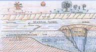 |
| Waterholes in riverbeds |
| (c) E. Nissen-Petersen, Kenya
|
The floors under the sand in riverbeds can consist of soil, clay, murram, black cotton soil, boulders, fractured rocks or solid rock bars
Where floors consist of permeable (water-leaking) material, such as sandy soil, fractured rocks or large boulders, water will seep into the underground through the floor. This may be beneficial for deep boreholes but certainly not for extracting water from riverbeds.
The reason why some riverbeds have water and others have not, is because the former have impermeable floors. If riverbeds have impermeable floors but no water, it is because the water has been drained downstream by gravity. If riverbeds with impermeable floors have water, then something must have stopped the water from being drained downstream. What could that be? The answer is found by hammering iron rods into the sand of riverbeds at certain intervals. Such probing shows that most riverbeds have a floor under the sand that bulges up and down. These natural barriers, called dykes, give the answer.Where the floor bulges upwards it acts as an underground dyke that stops the underground flow of water, as seen on probing points no. 10, 13, 15, 19 and 23. Where there is a depression in the floor it accumulates water, as seen on probing points no. 9, 14, 16 and 21. These are subsurface water reservoirs in the sand, from where water can be extracted. Water is found in this waterhole because the dyke prevents the water seeping downwards in the voids between the sand in the riverbed.
3) Dowsing
| 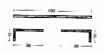 | 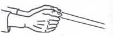 | 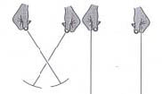 |
| Dowsing tool | Dowsing tool | Dowsing tool |
| (c) E. Nissen-Petersen, Kenya | (c) E. Nissen-Petersen, Kenya | (c) E. Nissen-Petersen, Kenya |
Gifted persons can use dowsing to locate underground water sources and underground dykes. The tool consists of a 1m long brazing rod cut in two halves and each half having a 12 cm long handle.
How to do: Hold the two dowsing rods loosely and pointing downwards so that they can swing freely. However, the hands must be held steady to allow gravity to pull the rods down while they are parallel. When walking slowly over an unknown underground water source, the rods will swing inwards. The force of the pull indicates the depth and volume of water in the ground. Only certain people have the ability to detect water in this way. Left: here is water; Right: here is no water.
4) Probing in riverbeds
| 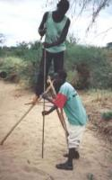 |
| Probing using probing rods hammered into the sand |
| (c) E. Nissen-Petersen, Kenya
|
When the most promising lengths of a riverbed have been identified during an evaluation walk, they are probed using probing rods hammered into the sand. The probing data is used for:
a) Drawing a plan and profiles of the riverbed to identify the deepest place from which water should be extracted and the shallowest place where the wall for a subsurface dam, a weir or a sand dam can be constructed.
b) Estimating the volume of sand in the reservoir and the extractable volume of water from the sand.
c) Providing the required data for drawing the designs and estimating the costs of construction.
5) Trial pits
| 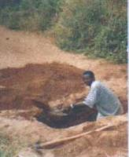 |
| Trial pits |
| (c) E. Nissen-Petersen, Kenya
|
Trial pits are excavated down to the floor under the sand every three metres to confirm the correctness of the probing.
6) Plan and profiles of riverbeds
| 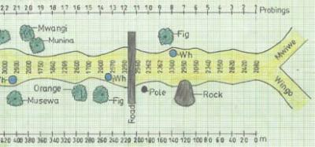 |
| Plan of the Mwiwe riverbed |
| (c) E. Nissen-Petersen, Kenya
|
Plans and profiles of riverbeds are very useful for identifying places with shallow water tables and volume of extractable water from riverbeds. See for example the plan and longitudinal profile of Mwiwe riverbed.
A plan and a longitudinal profile was drawn according to the probing data on a sheet of A3 mm graph paper which is 40 cm long and 28 cm wide. The horizontal measurements were drawn to a scale 1:2000, which means that the 440 metres length of the riverbed was drawn as 22 centimetres long and the 20 metre intervals between the probings were drawn as 1 centimetre long on the graph papers.
| Longitudinal profile of Mwiwe riverbed |
| (c) E. Nissen-Petersen, Kenya
|
The plan shows that the probed river has a length of 440 m and width varying from 17.5 m to 33.0 m. Water-indicating trees, e.g. Figs, Mwangi and Munina, grow along the riverbed. Waterholes having water 7 months after the last rains were located at probing point No. 10, 14 and 21 where the sand is deep. Water is trapped in the sand by downstream dykes at points No. 11, 18 and 23, as see on the longitudinal profile on the right.
The longitudinal profile shows that the sand is 3.0 m deep at point No. 14 and 1.75 m deep at point No. 21. Since both places are holding water 7 months after the last rain they are the best extraction points in that part of Mwiwe riverbed. The next phase in surveying the riverbed was to probe across at point No. 17 in order to learn of the volume of the depression and its water yielding capacity.
7) Extractable volumes of water from sand in riverbeds
When dry riverbeds are flooded by rains and flash-floods, the air in the voids between sand particles is pressed out by the water because water is heavier than air. When a dry riverbed is being flooded, it looks as if the riverbed is boiling as tens of thousands of air bubbles are being pressed out of the sand. This process is known as saturation. Fine textured sand has tiny voids that get saturated slowly with water. About 10% of water can be extracted from the volume of fine sand. Coarse sand has larger voids and is therefore saturated much quicker than fine sand. The volume of water that can be extracted from coarse sand is about 35% of the volume of sand.
Silt and sand extractability was tested and classified as follows:
| Silt | Fine Sand | Medium Sand | Coarse Sand | |
| Size (mm) | < 0.5 | 0.5 to 1 | 1.0 to 1.5 | 1.5 to 5.0 |
| Saturation | 38% | 40% | 41% | 45% |
| Water Extraction | 5% | 19% | 25% | 35% |
Sand testing:
| 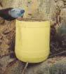 |
| Sand testing |
| (c) E. Nissen-Petersen, Kenya
|
The porosity and the volume of water that can be extracted from the sand reservoir can be determined by saturating 20 litres of sand with a measured volume of water. The water is then drained out of the container and measured by removing a plug from the bottom of the container.
How to do:
 |
| Sand test |
| (c) E. Nissen-Petersen, Kenya
|
1) Take samples of dry sand and fill in a 20 litres container.
2) Add water until saturation. For example: If the saturation of the sand was reached after adding 8 litres of water, the saturation is 40% (8 / 20 x 100)
3) Then make a small hole in the bottom of the container to drain the water out of the sand. If, for example, in one hour, 5 litres of water were extracted from the sand, that gives an extractable capacity of 25% (5 / 20 x 100).
Shallow Ground Water
A subsurface dam was built of soil and documented by Bihawana Mission near Dodoma in the early 1950s and is still functioning well. A similarly successful subsurface dam was built in the same area in the 1920s. Several subsurface dams were built of various materials, such as soil, burnt bricks, concrete blocks and reinforced concrete during a training course in 1991.
Function of subsurface dams
Should the water yield from a river intake or well be insufficient for the demand, then a subsurface dam can be constructed cheaply of soil. The function of a subsurface dam is:
a) Block the underground flow of water between the voids in the sand
b) Raise the water level in the sand to about 50 cm below the surface of a riverbed.
How to construct a subsurface dam
| 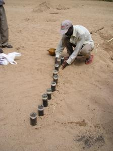 |
| Identifying suitable site |
| (c) E. Nissen-Petersen, Kenya
|
How to identify the most clayey soil:
1) Collect soil samples from nearby riverbanks and fields. The equipment for analyzing the soil samples consists of plastic bottles of equal size, of which the caps have been removed and the bottoms cut off.
2) The bottles are placed upside down in the sand, or sloping against a wall, and filled halfway with soil samples.
3) Water is poured on top of the soil samples several times. After some minutes it can be observed which soil sample has the slowest infiltration rate due to having the highest clay content. This soil is the most suitable for building the dam wall.
| 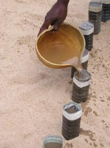 |
| Testing soil type to identify most clayey soil |
| (c) E. Nissen-Petersen, Kenya
|
When a suitable site has been identified, all the sand in the riverbed is removed in a 3 metre wide stretch between the two riverbanks, so that the floor under the sand is fully exposed.
Thereafter a 100 cm wide trench, called a key, is excavated into the floor right across the riverbed and into the two riverbanks. The depth of the key must be at least 60 cm into solid soil to prevent seepage under the dam wall.
The best clayey soil identified by the testing mentioned above, must now be transported to the dam site by e.g. sacks, donkeys, ox-carts, wheelbarrows or a tractor with trailer.
First the whole length of the key is filled with a 20 cm thick layer of the clayey soil that is moistened with water and compacted using either tree trunks or cows or a tractor driven back and forth until all air is forced out of the soil. Thereafter, successive 20 cm thick layers of soil are laid out along the whole length of the key and dam wall, and each layer is moistened and compacted, until the top of the dam wall has reached to 30 cm below the surface of the sand in the riverbed.
The upstream and downstream sides of the dam wall, having a slope of about 45 degrees, are then smoothened using shovels and wooden floats. The upstream side of the dam wall should be plastered with clay or cow dung to prevent water from seeping through the dam wall.
Finally, the excavated sand is back-filled against both sides and the top of the dam wall. Two short iron bars should be hammered into the riverbanks at each end of the dam wall, to locate the dam wall in the future (the dam will be invisible after the first flooding).
| 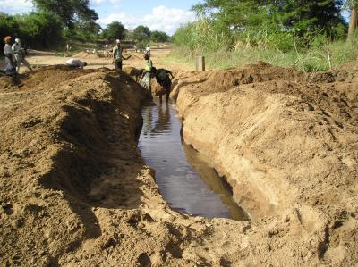 |
| Subsurface dams being constructed by a self-help community (Makueni, Kenya) |
| (c) E. Nissen-Petersen, Kenya
|
| 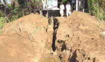 |
| Construction of a subsurface dam |
| (c) E. Nissen-Petersen, Kenya
|
 |
| Subsurface dam. The sand in a riverbed has been removed and the 60 cm deep key has been excavated in the floor. |
| (c) E. Nissen-Petersen, Kenya
|
Extraction from shallow ground water sources - Wells, water lifts and pumps
There are several technologies for lifting water from riverbeds that are affordable and sustainable for individuals and community water projects.
Water holes
| 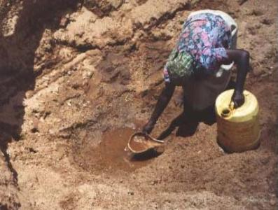 |
| Waterhole in a riverbed |
| (c) E. Nissen-Petersen, Kenya
|
| 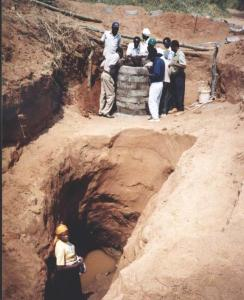 |
| Hand-dug well next to a waterhole |
| (c) E. Nissen-Petersen, Kenya
|
A safer and cleaner option is to sink a hand-dug well next to the waterhole in a riverbed. However this option is more expensive.
Hand-dug wells
| 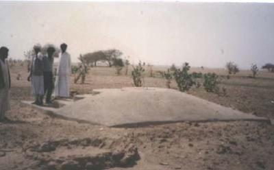 |
| Hand-dug well |
| (c) E. Nissen-Petersen, Kenya
|
| 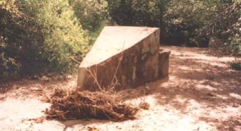 |
| A hydro-dynamic well-head |
| (c) E. Nissen-Petersen, Kenya
|
| 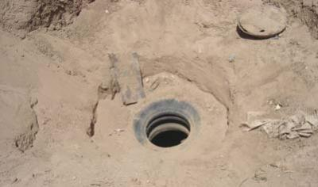 |
| A well-shaft |
| (c) E. Nissen-Petersen, Kenya
|
A well-shaft can also be lined with worn-out lorry tyres and closed by a lid made from the bottom of an oil-drum as in Somaliland.
Intakes in riverbanks
| 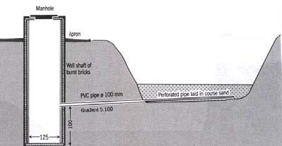 |
| Hand-dug well - underground sketch |
| (c) E. Nissen-Petersen, Kenya
|
If underground water cannot seep into a hand-dug well, an infiltration pipe can be laid in a trench to drain water into the hand-dug well. The design can be made cheaper by filling the trench with stones covered with polythene sheeting instead of laying the infiltration pipe.
| 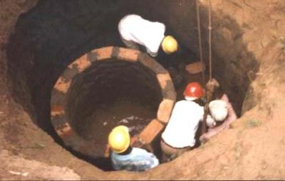 |
| Building a hand-dug well |
| (c) E. Nissen-Petersen, Kenya
|
Infiltration pipes can also be installed in a hole drilled buy a jet of water form a length of steel pipe connected to petrol powered pump with a flexible hose pipe.Well shafts can be lined with burnt bricks when built upwards from the bottom of hand-dug wells. However, this procedure is risky because collapsing soil can bury the builders alive.
| 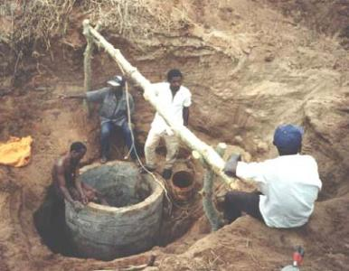 |
| (c) E. Nissen-Petersen, Kenya
|
A safer method is to build a sinking well whereby curved concrete blocks are reinforced together onto a foundation ring made of concrete. The foundation ring is built in the excavation for the well.
Small water lifts and pumps for shallow water sources
| The simplest and cheapest method to lift water is a bucket tied to a rope. |
| 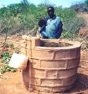 |
| Extracting water with a bucket |
| (c) E. Nissen-Petersen, Kenya
|
| A foot-operated money-maker pump |
| 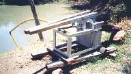 |
| Water pump |
| (c) E. Nissen-Petersen, Kenya
|
| A windlass made of a few Sisal poles |
| 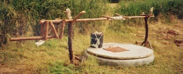 |
| Windlass |
| (c) E. Nissen-Petersen, Kenya
|
| A rope and washer pump |
| 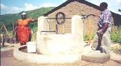 |
| A pump |
| (c) E. Nissen-Petersen, Kenya
|
| A windlass with an iron handle |
| 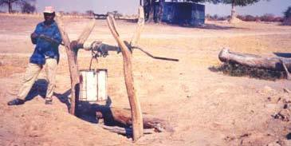 |
| A windlass |
| (c) E. Nissen-Petersen, Kenya
|
See images of further water lifts and pumps under "Gallery Images"
Two examples of pumps for large reticulated water supply systems
| 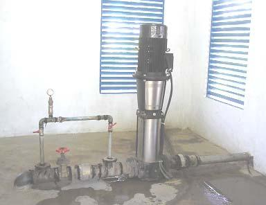 |
| Grundfoss CR32-6 pump |
| (c) E. Nissen-Petersen, Kenya
|
The pump in the pump house above is a booster pump, with a capacity of 19m3/hr at 154 m head.
| 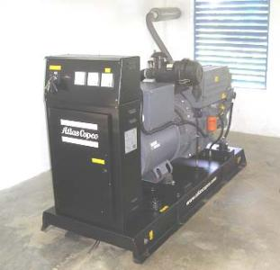 |
| A diesel generator |
| (c) E. Nissen-Petersen, Kenya
|
|
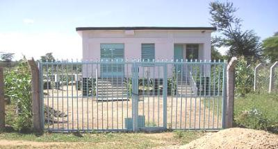 |
| The Nzeeu pump house |
| (c) E. Nissen-Petersen, Kenya
|
Information Sources
- Agarwal, A. and Narain, S. 1991. Dying wisdom. Centre for Science and Environment, India.
- Ahnfors, O. 1980. Groundwater arresting sub-surface structures. Sida/Govt. of India.
- Backman, A. and Isakson. 1994. Storm water management in Kanye, Botswana. Swedish University of Agricultural Science.
- Burger, S.W 1970. Sand storage dams for water conservation. Water Year 1070. S.Africa.
- Faillace, C. & E.R. 1987. Water quality data book. Water Development Agency, Somalia.
- Fewster, E. 1999. The feasibility of sand dams in Turkana. Loughborough University, UK.
- Finkel & Finkel Ltd. 1978. Underground dams in arid zone riverbeds. Haifa, Israel.
- Finkel & Finkel Ltd. 1978. Underground water storage in Iran. Haifa, Israel.
- Gould, J. & Nissen-Petersen, E. 1999. Rainwater catchment systems. IT Publications, UK.
- Longland, F. 1938. Field engineering. Tanganyika.
- Mutiso, G. & Thomas, D. 2000. Where there is no water. SASOL, Kenya.
- Newcomb, R.C. 1961. Storage of groundwater behind sub-surface dam. US Geol. Survey. US
- Nilsson, A. 1988. Groundwater dams for small-scale water supply. IT Publications. UK.
- Nissen-Petersen, E. (2006). Water from Dry Riverbeds. How dry and sandy riverbeds can be turned into water sources by hand-dug wells, subsurface dams, weirs and sand dams. ASAL Consultants Ltd. and Danish International Development Assistance (Danida), Kenya. www.waterforaridland.com
- Nissen-Petersen, E. 1982. Rain catchment and water supply in rural Africa. Hodder/Stoughton.
- Nissen-Petersen, E. 1990. Harvesting rainwater in semi-arid Africa. Danida, Kenya.
- Nissen-Petersen, E. 1996. Ground water dams in sand-rivers. UNCHS, Myanmar.
- Nissen-Petersen, E. 2000. Water from sand rivers. RELMA/Sida, Kenya.
- Nissen-Petersen, E. and Lee, M. 1990. Subsurface and sand storage dams. UNDP/Africare, Tanzania.
- Raju, K.C.B.1983. Subsurface dams and its advantages. Ground Water Board, India.
- Sandstrom, K. 1997. Ephemeral rivers in the tropics. Linkoping University, Sweden.
- Slichter. 1902. Sub-surface dams. USGS Water Supply and Irrigation. USA.